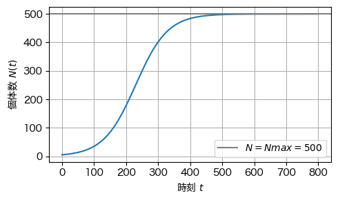
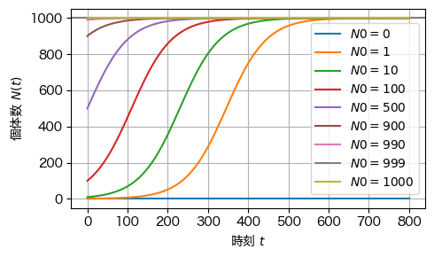

import numpy as np
import matplotlib.pyplot as plt
from matplotlib import rcParams
rcParams['font.family'] = 'Hiragino Sans'
---------------------------------------------------------------------------
ModuleNotFoundError Traceback (most recent call last)
Cell In[1], line 1
----> 1 import numpy as np
2 import matplotlib.pyplot as plt
3 from matplotlib import rcParams
ModuleNotFoundError: No module named 'numpy'
r = 0.02 # 成長率
Nmax = 1000 # 環境収容力
N0 = 10 # 初期個体数
t = np.linspace(0, 800, 200)
N = Nmax / (1 + ((Nmax - N0)/N0) * np.exp(-r * t))
fig, ax = plt.subplots(figsize=(5,3))
ax.plot(t, N)
ax.axhline(Nmax, color='gray', label=f"$N=Nmax={Nmax}$") # Nmaxのラインを描画
ax.set_xlabel(r"時刻 $t$")
ax.set_ylabel(r"個体数 $N(t)$")
ax.legend() # labelの表示
ax.grid(True) # 格子の表示
fig.tight_layout() # レイアウトを調整
fig.savefig("./3_logistic_growth.png")
plt.show()

r1 = 0.01
r2 = 0.02
Nmax1 = 500
Nmax2 = 250
N0 = 5
t = np.linspace(0, 1000, 200)
N1 = Nmax1 / (1 + ((Nmax1 - N0)/N0) * np.exp(-r1 * t))
N2 = Nmax2 / (1 + ((Nmax2 - N0)/N0) * np.exp(-r2 * t))
fig, ax = plt.subplots(figsize=(5,3))
ax.plot(t, N1, label=f"$r={r1}$，$Nmax={Nmax1}$")
ax.plot(t, N2, label=f"$r={r2}$，$Nmax={Nmax2}$")
ax.axhline(Nmax1, color='gray')
ax.axhline(Nmax2, color='gray')
ax.set_xlabel(r"時刻 $t$")
ax.set_ylabel(r"個体数 $N(t)$")
ax.legend() # labelの表示
ax.grid(True) # 格子の表示
fig.tight_layout() # レイアウトを調整
fig.savefig("./3_double_logistic_growth.png")
plt.show()

r = 0.02 # 成長率
Nmax = 1000 # 環境収容力
N0_list = [0, 1, 10, 100, 500, 900, 990, 999, 1000]
# from matplotlib import cm, colors
# # カラーマップ設定（初期値N0に応じて色が変わる）
# # cmap = cm.viridis # 好みで 'plasma', 'magma', 'cividis' なども可
# cmap = cm.rainbow
# norm = colors.Normalize(vmin=min(N0_list), vmax=max(N0_list))
t = np.linspace(0, 800, 200)
fig, ax = plt.subplots(figsize=(5,3))
ax.axhline(Nmax, color='gray') # Nmaxのラインを描画
for N0 in N0_list:
N = Nmax*N0 / (N0 + (Nmax - N0) * np.exp(-r * t))
# ax.plot(t, N, label=f"$N0={N0}$", color=cmap(norm(N0)))
ax.plot(t, N, label=f"$N0={N0}$")
ax.set_xlabel(r"時刻 $t$")
ax.set_ylabel(r"個体数 $N(t)$")
ax.legend() # labelの表示
ax.grid(True) # 格子の表示
plt.tight_layout() # レイアウトを調整
fig.savefig("./3_multi_logistic_growth.png")
plt.show()

タンチョウの個体数の変化#
data = dict()
data["year"] = [1952,1953,1954,1955,1956,1957,1958,1959,1960,1961,1962,1963,1964,1965,1966,1967,1968,1969,1970]
data["N"] = [33, 42, 52, 61, 76, 92, 125, 139, 172 ,175, 184, 147, 154, 172, 170, 200, 171, 212, 179]
fig, ax = plt.subplots(figsize=(5,3))
ax.scatter(data["year"],data["N"],label="real data")
<matplotlib.collections.PathCollection at 0x127444fa0>

r = 0.35 # 成長率
Nmax = 200 # 環境収容力
N0 = data["N"][0]
t = data["year"] - np.ones(len(data["year"]))*1952
N = Nmax / (1 + ((Nmax - N0)/N0) * np.exp(-r * t))
fig, ax = plt.subplots(figsize=(5,3))
ax.scatter(data["year"],data["N"],label="real data")
ax.plot(data["year"], N, label="model data")
ax.legend()
fig.savefig("./3_tancho.png")
plt.show()

# ax.axhline(Nmax, color='gray', label=f"$N=Nmax={Nmax}$") # Nmaxのラインを描画
# ax.set_xlabel(r"時刻 $t$")
# ax.set_ylabel(r"個体数 $N(t)$")
# ax.legend() # labelの表示
# ax.grid(True) # 格子の表示
# fig.tight_layout() # レイアウトを調整
# plt.show()
[<matplotlib.lines.Line2D at 0x127061610>]

# data2 = dict()
# data2["year"] = [1975,1980,1985,1990,1995,2000,2005]
# data2["N"] = [194, 267, 384, 499, 607, 798, 1081]
# fig, ax = plt.subplots(figsize=(5,3))
# plt.plot(data["year"], data["N"])
[<matplotlib.lines.Line2D at 0x1267dab50>]